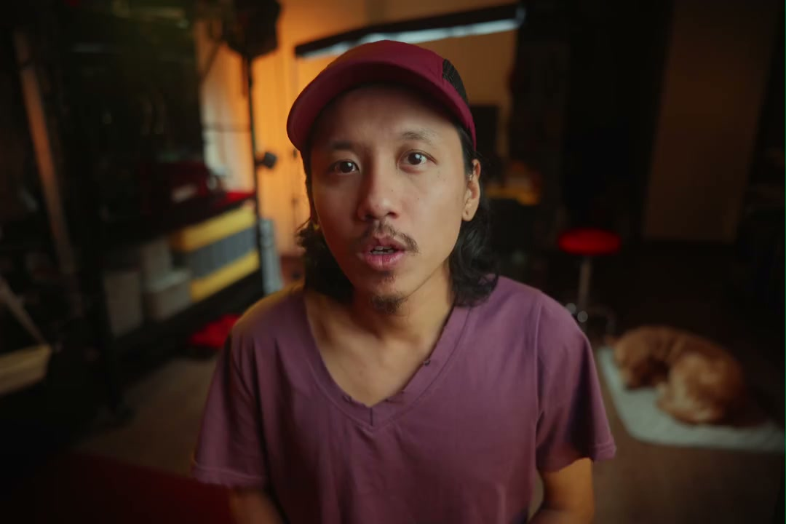
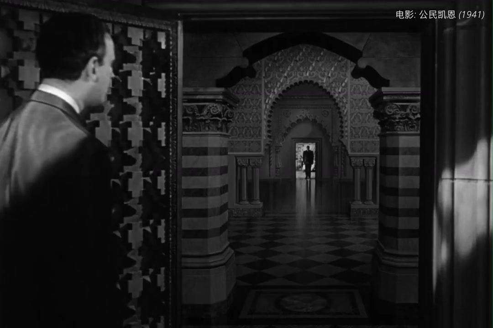
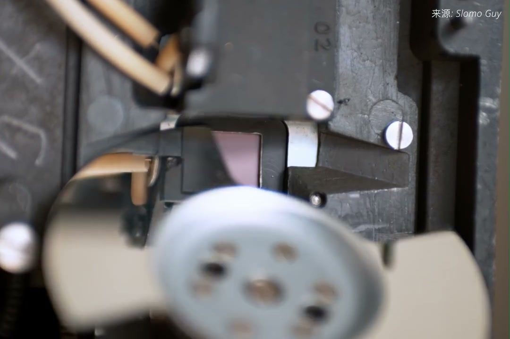

内容要点
这段视频围绕「拍视频为何不用曝光三要素？」展开，按时间介绍其中的关键环节。光圈快门ISO为何过时了。
拍摄与画面处理
光圈快门ISO为何过时了。只要你不是拍立德或者手机原相机摄影师。必定都逃不过酷学作三座曝光基石。但在2026年。我们默认摄影师必须照片视频双修的年代。是到摄影圣经似乎开始悄悄过时。今天我们来聊聊为何拍视频不用曝光三要素。主要原因是视频拍摄成为了内容生产的主力。视频创作者和传统影视工业者之间的界限已经越来越模糊。而专业的电影人从来不使用曝光三要素

进阶设置与优化
原生感光度是一台摄影机。动态范围最大。画质最好的挡位。所以为了得到。画质最优秀的毛片。哪怕剧组调整现场任何的其他东西。也不会碰感光度。而R来摄影机的原生ISO就是800。奇营800是一个最实用灵活的甜点挡位。被誉为黄金标准
拍摄与画面处理
电影拍摄光圈开到T2.8。已经被视为是非常大的光圈。好莱坞确实不法自动更加的方案。包括大将也有拉达跟焦器。但都是为了辅助更加远。而不是代替更加远的。由于现代内容消费的中端。转站到手机和平板上。屏幕越来越小。背景虚化的呈现难度比大萤幕更高

进阶技巧
我们最直觉的反应就是减慢快门。立干见影 非常奏效。但一旦到了拍视频。调节快门可是犯了大忌。电影的快门速度只有一个。那就是48分之1秒。大伙都知道电影作品的帧率为24帧。每秒钟在你眼前快速播放24张图片。让大脑会支出连观动感的错觉。很多朋友误以为人影的帧率也是24帧
总结收束
设定一个兼容声音画面。并且稳定播放的标准帧率。成为了不得不解决的问题。随之才有了24帧每秒的标准。所以24帧每秒。既不是人眼感知动态的极限帧率。也不是能够形成动态错绝的最低帧率。但是如果播放的画面过于清晰。人眼能开始觉察到眼前播放的。并不是连观影像

设定一个兼容声音画面。